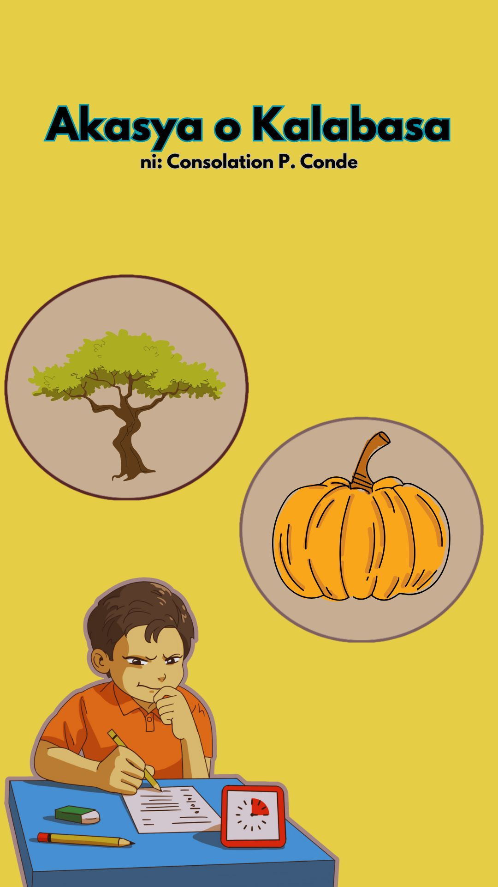
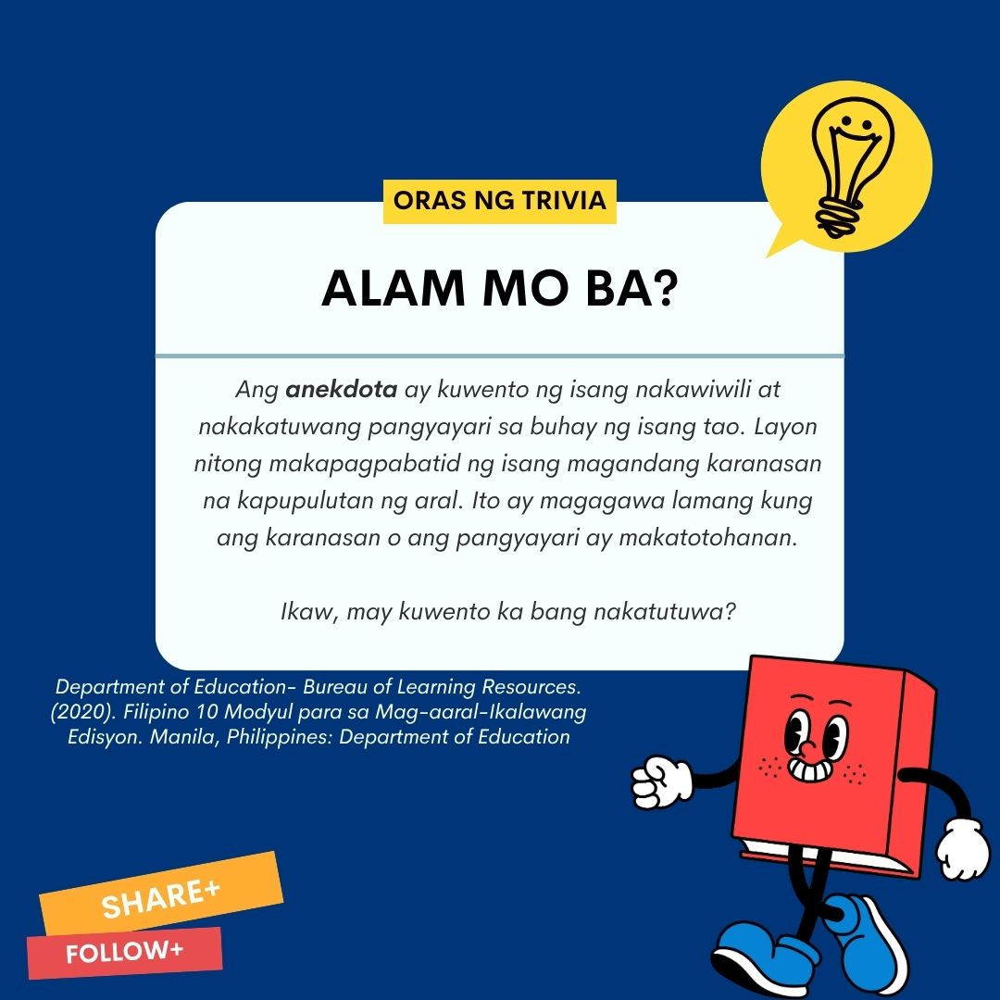
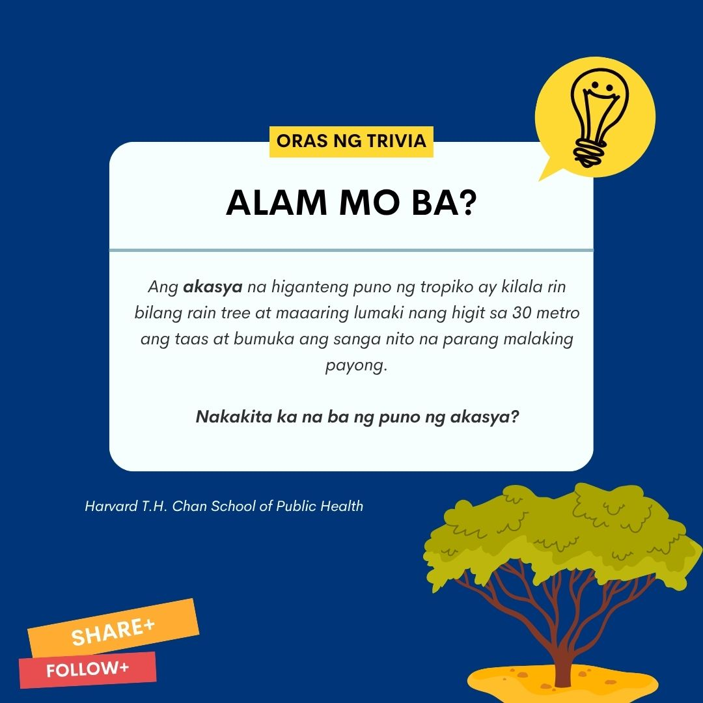
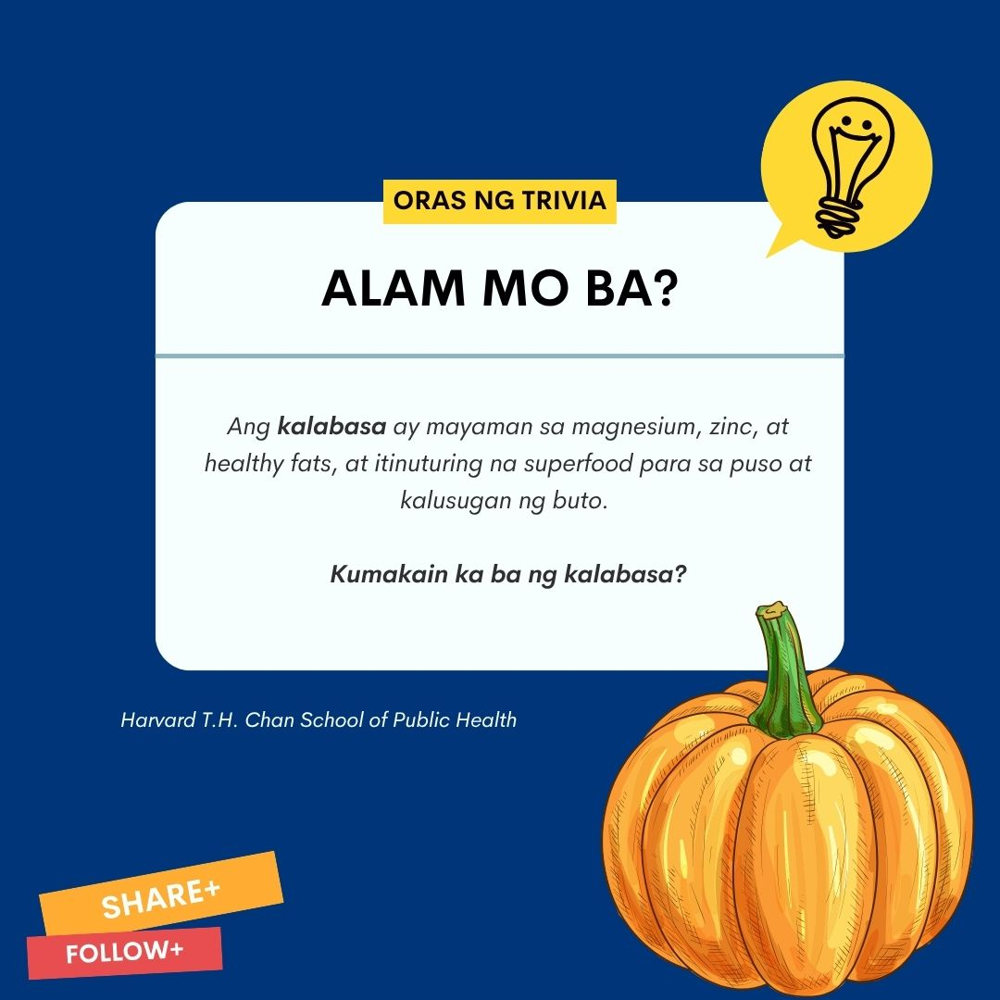
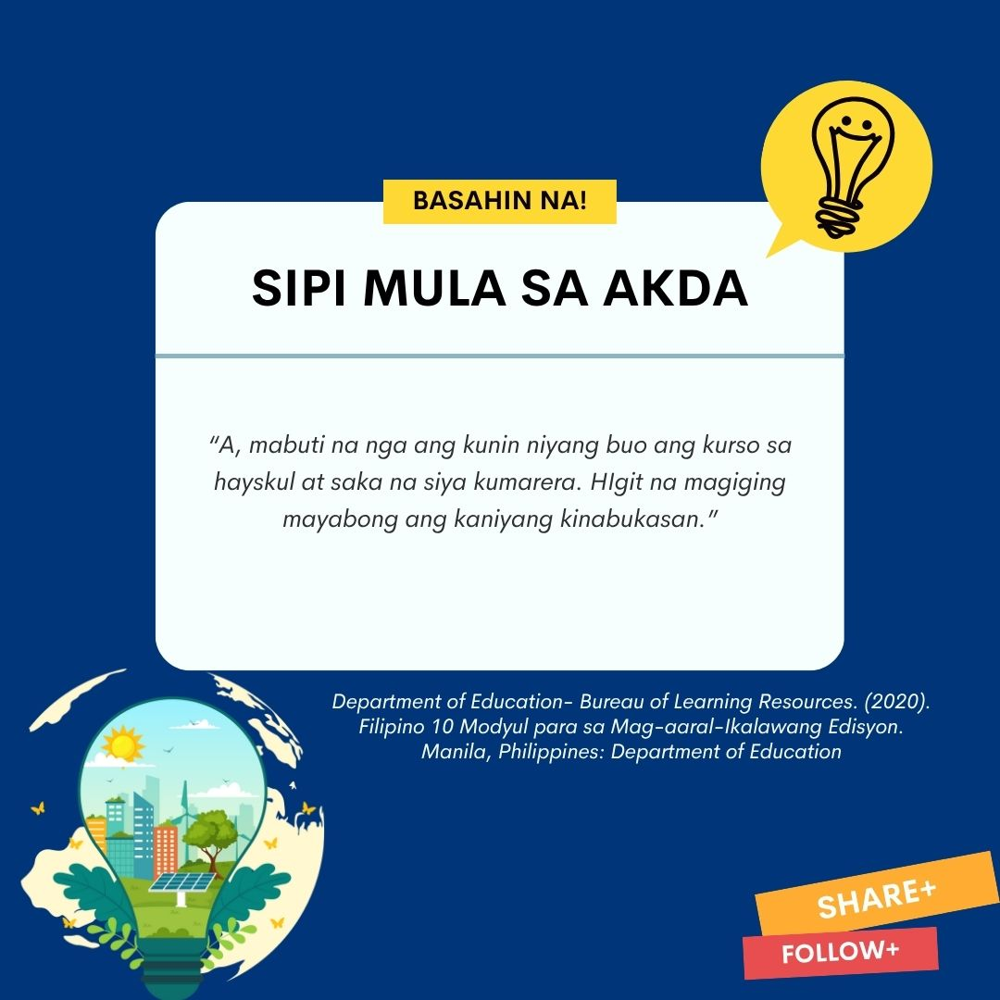
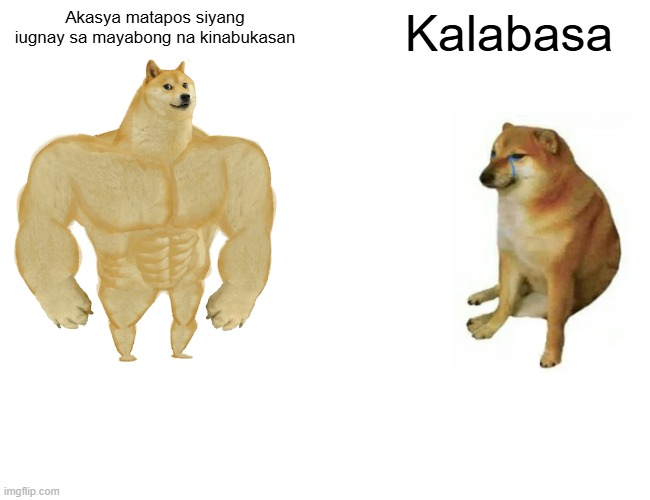
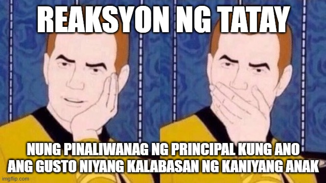
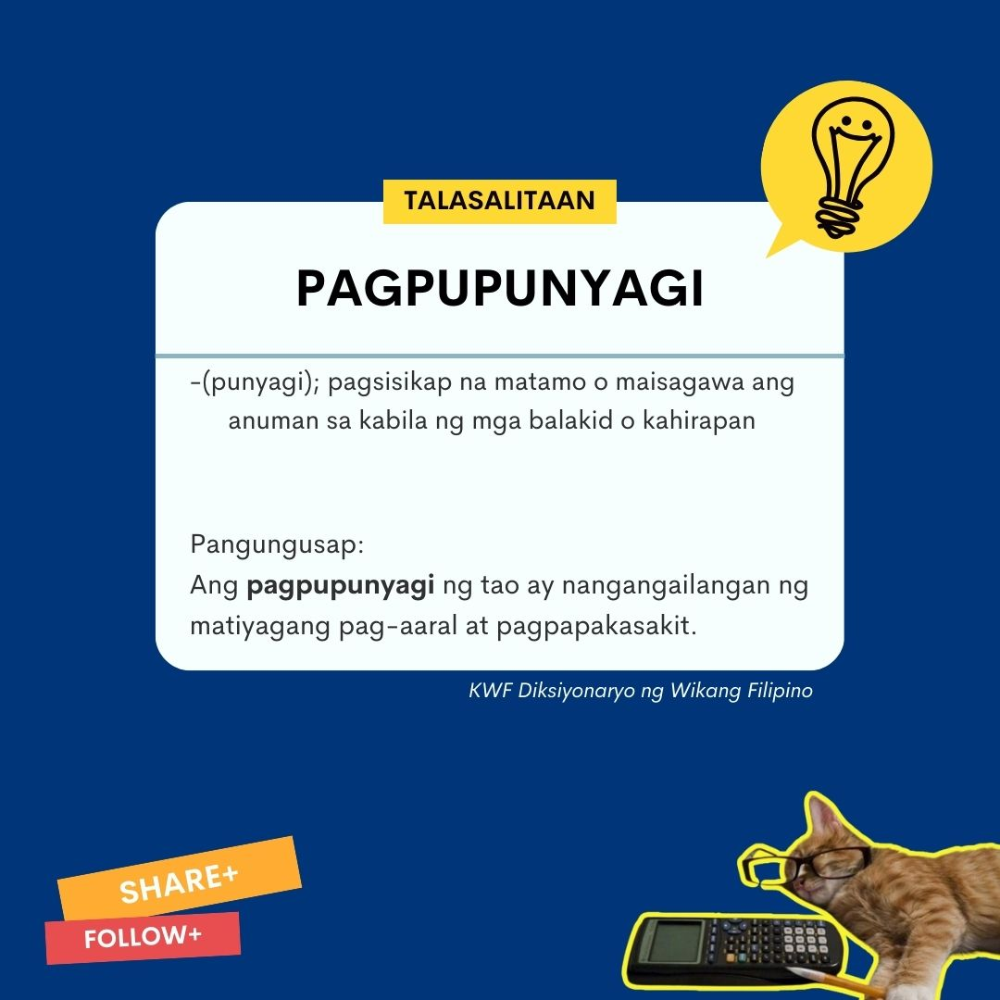
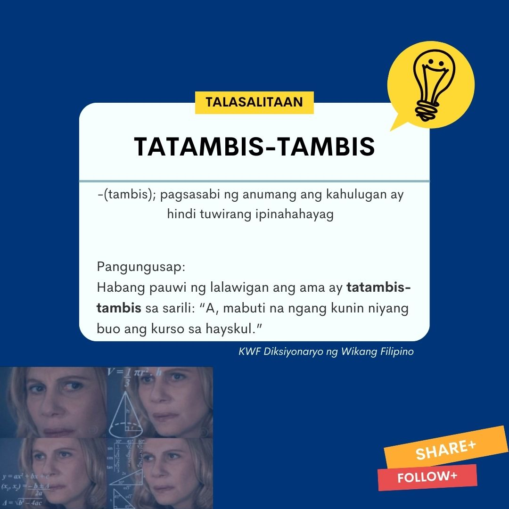

Mga Sanggunian - 2020 "Department of Education- Bureau of Learning Resources. Filipino 10 Modyul para sa Mag-aaral-Ikalawang Edisyon. Manila, Philippines: Department of Education
1970: Diwang Kayumanggi
Consolation P. Conde
Hindi maikakaila na kung malaki ang puhunan ay maaaring tumubo rin iyon nang malaki kaysa maliit ang naturan. Gayundin ang paghahanda at pagpupunyagi ng tao na pinamumuhunanan ng puu-puung taong pag-aaral at pagpapakasakit. Karaniwan nang sa may mataas na pinag-aralan ay maamo ang kapalaran. At ito’y maitutulad din nga sa pagmamahalan.
Pasukan na naman. Nagbukas na ang mga Pamantasan at matataas na paaralan sa Maynila.
Samantala, sa nayon ng Kamias, hindi kalayuan sa lungsod...
Maagang nagbangon nang umagang yaon si Aling Irene at inihanda kapagkaraka ang mga pangangailangan ng kabutong anak na si Iloy. Si Mang Simon naman ay hindi muna nagtungo sa linang upang samahan sa pagluwas ang anak na pag-aaralin sa Maynila.
Awa naman ng Diyos ay maluwalhating nakarating sa lungsod ang mag-ama. Isang balitang paaralang sarili ang kanilang tinungo agad. Dinatnan nila ang tagatala na abalang-abala sa pagtanggap ng di-kakaunting mga batang nagsisipagprisinta.
Nagpalinga-linga si Mang Simon. Nang makita ang babalang nakasabit sa may pintuan ng Tanggapan ng punongguro ay kinawit sa bisig si Iloy. “Halika at makikipag-usap muna ako sa punongguro.”
“Magandang umaga po sa kanila,” panabay na bating galang ng mag-ama.
“Magandang umaga po naman,” tugon ng punongguro na agad namang nagtindig sa pagkakaupo at nag-alok ng upuan. “Ano po ang maipaglilingkod ko sa kanila?”
“E, ibig ko po sanang ipasok ang aking anak dito sa inyong paaralan.”
“A, opo. Sa ano po namang baitang? Usisa ng punongguro.
“Katatapos pa po lamang niya ng elementarya sa aming nayon noong nakaraang Marso,” paliwanag ni Mang Simon.
“Kung gayon po’y sa unang taon ng hayskul? Ano po?”
“Ngunit… ibig ko po sanang malaman kung maaaring ang kunin na lamang niya ay isang maiikli-ikling kurso ukol sa isang tanging karunungan upang siya’y makatapos agad, maaari po ba?
“Aba, opo,” maaga pa na tugon ng punongguro. “Maaaring ang lalong pinakamaiikling kurso ang kaniyang kunin. Iyan ay batay sa kung ano ang gusto ninyong kalabasan niya. Kung ang nais ninyo ay magpatubo ng isang mayabong na punong akasya, gugugol kayo ng puu-puung taon, subalit ang kakailanganin ninyo ay iilang buwan lamang upang makapaghalaman kayo ng isang kalabasa.”
Dili di natubigan si Mang Simon sa huling pangungusap ng punongguro. Gayundin si Iloy. Pagkuwan ay nagbulungan ang mag-ama.
At... umuwi nang nag-iisa si Mang Simon. Habang naglalakbay na patungong lalawigan ay tatambis-tambis sa sarili: “A, mabuti na nga ang kunin niyang buo ang kurso sa hayskul at saka na siya kumarera. Higit na magiging mayabong ang kaniyang kinabukasan.”







